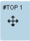

Zeitplanung¶
Der Zeitplan gibt Ihnen eine Übersicht über alle Tagesordnungspunkte (Einreichungen, Pausen, Sonstiges). Hier können Sie die Reihenfolge und Dauer der TOPs festlegen.
FIXME: Veränderungen des Startzeitpunkts sortiert alle TOP’s auf diesen neuen Startzeitpunkt, dadurch verletzte Abhängigkeiten werden erst durch eine neue optimierung gelöst.
Teilnehmer/innen¶
Alle auf einen Tagesordnungspunkt bezogenen Teilnehmer/innen werden innerhalb des TOP’s aufgelistet. Auf der rechten Seite der Ansicht finden Sie einen Überblick über alle anwesenden Teilnehmer/innen in dieser Sitzung.
Einschränkungen der Teilnehmer/innen¶
Wenn eine Teilnehmerin zu einer bestimmten Zeit nicht anwesend sein kann (weil sie erst später kommt, früher gehen muss oder zwischendurch abwesend ist), besteht die Möglichkeit über den Link Einschränkungen bearbeiten die betreffende zeitliche Einschränkung anzugeben. Zu jeder Teilnehmerin gibt es einen eigenen Link über den Sie zur entsprechenden Bearbeitungsseite gelangen.
Teilnehmer/innen-Einschränkungen festlegen¶
Geben Sie in dieser Ansicht die zeitliche Einschränkung der betreffenden Person an. Klicken Sie dafür auf  . Dadurch öffnen sich Felder, in denen Sie den Zeitraum eintragen können. Zusätzlich besteht die Möglichkeit einer Gewichtungsangabe, d.h., Sie können mittels eines Auswahlfeldes angeben, ob der betreffende Zeitraum für die Person ungünstig oder unmöglich ist. Geben Sie mehrere Zeiträume an, wenn das der Fall sein sollte. Klicken Sie dafür jedes Mal auf , damit sich neue Felder öffnen. Sollten Sie einen Zeitraum entfernen wollen, klicken Sie auf
. Dadurch öffnen sich Felder, in denen Sie den Zeitraum eintragen können. Zusätzlich besteht die Möglichkeit einer Gewichtungsangabe, d.h., Sie können mittels eines Auswahlfeldes angeben, ob der betreffende Zeitraum für die Person ungünstig oder unmöglich ist. Geben Sie mehrere Zeiträume an, wenn das der Fall sein sollte. Klicken Sie dafür jedes Mal auf , damit sich neue Felder öffnen. Sollten Sie einen Zeitraum entfernen wollen, klicken Sie auf  .
.
Die Bearbeitung muss gespeichert werden, damit sie in die Zeitplanung aufgenommen werden kann.
Verletzte Einschränkungen¶
Wurde im Zeitraum, in dem eine Teilnehmerin nicht anwesend ist (diese Zeit wird unter Einschränkungen bearbeiten angegeben), ein ihre Anwesenheit erforderlicher TOP geplant, so scheint diese Kollision unter der Überschrift Verletzte Einschränkungen auf. Der Hinweis soll Ihnen helfen, mögliche Organisationsfehler zu verhindern.
Optimierungen¶
Wenn Sie auf den Link Optimieren klicken, wird Ihnen automatisch - unter Berücksichtigung der zeitlichen Einschränkungen der Sitzungsteilnehmer/innen - eine vorteilhafte Sortierung erstellt. Dieser Vorgang kann einige Sekunden in Anspruch nehmen. Während die Optimierung läuft, kann der Zeitplan nicht manuell bearbeitet werden. Sind Sie mit der Verteilung nicht zufrieden, können Sie den Vorgang wiederholen.
Falls Sie mehr Zeit für die Planung der TOPs zur Verfügung haben, besteht die Möglichkeit, die Funktion Lange Optimieren zu nutzen. Die Wartedauer ist etwas länger als bei der normalen Optimierung, aber das Ergebnis fällt vorteilhafter aus.
Tagesordungspunkte selbst erstellen¶
Sie können ein neues TOP hinzufügen (z.B. eine Pause oder einen TOP, der keinen Bezug zu einer Studie hat), indem Sie auf den Link Termin hinzufügen klicken. Sie werden auf die entsprechende Seite weitergeleitet. Geben Sie einen Titel ein. Wenn es sich dabei um eine Pause handelt, schreiben Sie “Pause”, “Mittagspause” o.ä. in das Titel-Eingabefeld und aktivieren Sie zusätzlich die Checkbox. Tragen Sie außerdem die ideale Startzeit und die Dauer ein. Die von Ihnen angegebene ideale Startzeit wird bei einer gegebenenfalls durchgeführten Optimierung berücksichtigt. Wenn Sie während der Erstellung abbrechen wollen, klicken Sie auf den entsprechenden Knopf. Wenn Sie die Angaben speichern, werden Sie zurück auf die Übersicht aller TOPs geführt, wo das neu erstellte TOP automatisch als Letztes eingereiht wird. Klicken Sie auf eine der beiden Optimierungs-Optionen, um das neue TOP möglichst gut in den Tagesablauf zu integrieren oder verschieben Sie es manuell.
TOPs, die unter Termin hinzufügen erstellt wurden, können wieder gelöscht werden. Klicken Sie dafür auf innerhalb des TOP’s.
Umsortierung der TOPs¶
 Um die Einträge des Zeitplans manuell umzusortieren, nehmen Sie ein Element des Zeitplans am Pfeilkreuz und ziehen Sie es an die gewünschte Position. Beachten Sie, dass eine Optimierung in die Sortierreihenfolge eingreift und möglicherweise die von Ihnen gewählte Position des Elements verändert.
Zeitdauer eines TOP’s ändern¶
Innerhalb eines jeden TOP’s gibt es ein Eingabefeld, in dem Sie die Zeitdauer auf einen längeren oder kürzeren Zeitraum ändern können. (z.B. 10:15:00). Betätigen Sie anschließend die Eingabetaste.
Pausen-TOP¶
Im Pausen-TOP sehen Sie die Anzahl der Teilnehmer/innen vor, nach und während der Pause. Dadurch kann das System errechnen, für wie viele Teilnehmer/innen Catering bestellt werden muss.